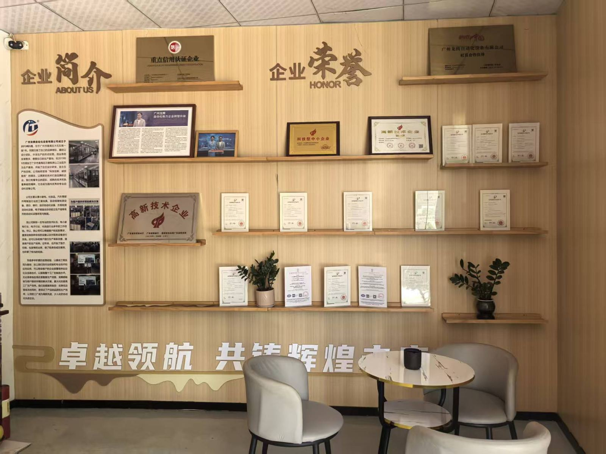

关于龙腾自动化
广州龙腾自动化设备有限公司成立于 2019 年 5 月，位于广州市番禺区。公司成立之初即注册了自有品牌商标，最初以设计团队、外发生产的形式经营；2019 年 9 月在石壁街屏山工业区建立自有生产基地，此后自主设计研发、自主生产。
公司主营小家电、电子、化妆品、食品、医疗器械、服装、汽车零部件等制造行业的工装夹具、自动组装检测设备及生产线，烫印、移印、丝印自动化设备，CCD 外观检测设备与电子制造自动组立生产线。
总经理曹城培在精密制造领域深耕三十年。公司是国家高新技术企业，通过 ISO 9001:2015 质量管理体系认证，拥有授权专利 9 件。

2019成立于广州
国家级高新技术企业（2025）
ISO 9001质量管理体系认证
9 件授权专利
50+已设计制造的设备类型
工厂实拍
走进研发中心与装配车间
每台设备都在这里完成设计、装配与测试后才发货——欢迎到厂参观，或通过实时视频参加出厂验收。


媒体报道
央视专访
中央电视台《崛起的民族品牌》专题节目专访总经理曹城培，讲述龙腾如何以自动化助力制造企业转型升级。
- 全生命周期服务：需求诊断、方案设计、设备制造、安装调试与数据运维。
- 模块化快速换线设计——一次换型从 4 小时缩短到 20 分钟。
- 积累 2000 余条数据的制造知识库，沉淀历次项目的工艺参数与经验。
节目：中央电视台《崛起的民族品牌》。
发展历程
发展历程
2019.05
在广州成立，注册自有商标
2019.09
番禺自有生产基地投用，自主设计与制造
2023
首件实用新型专利授权；入库科技型中小企业
2024
再获 7 件实用新型专利授权
2025
通过 ISO 9001:2015 认证；受让工业机器人夹持机构发明专利；广东省创新型中小企业；国家高新技术企业
2026
接受央视专访；上线面向东南亚与欧洲客户的三语外贸网站
选择龙腾
制造企业为什么选择龙腾
01
行业经验丰富
多年自动化设备经验，每台设备按客户产品专属定制。
02
实力保障
机械设计、电气工程与生产团队齐全。
03
质量保证
严选供应商，每台设备出厂前都经过检验。
04
严谨的安装服务
选派十年以上经验的安装师傅，现场测试并培训操作人员。
05
完善的售后服务
使用中遇到问题随时联系，专人服务，并可远程诊断。